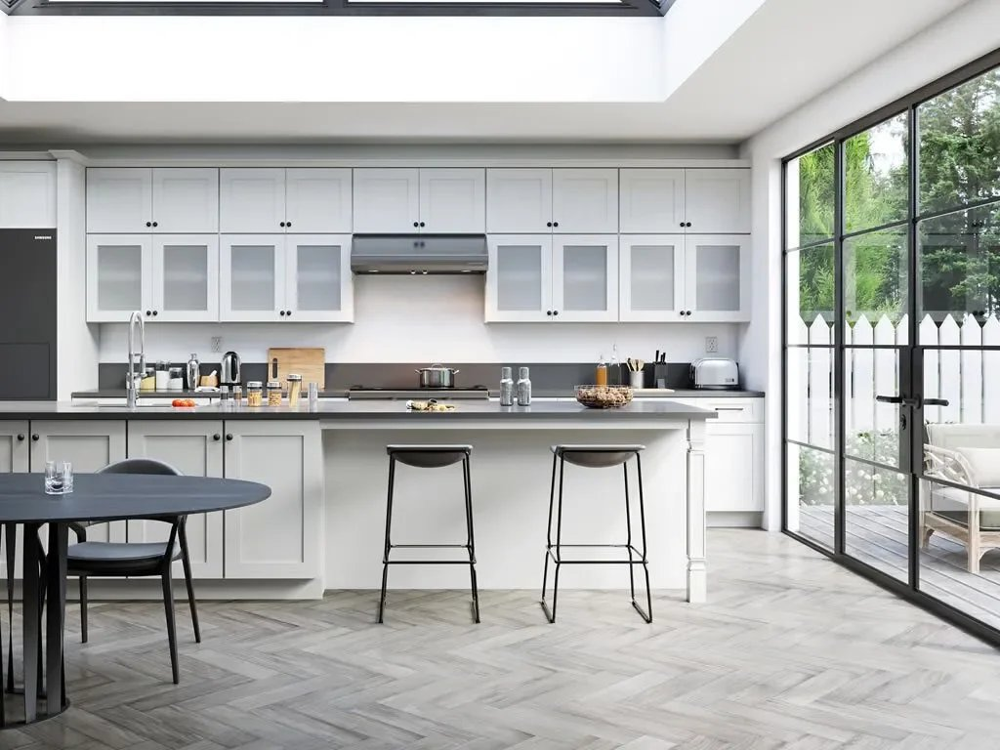
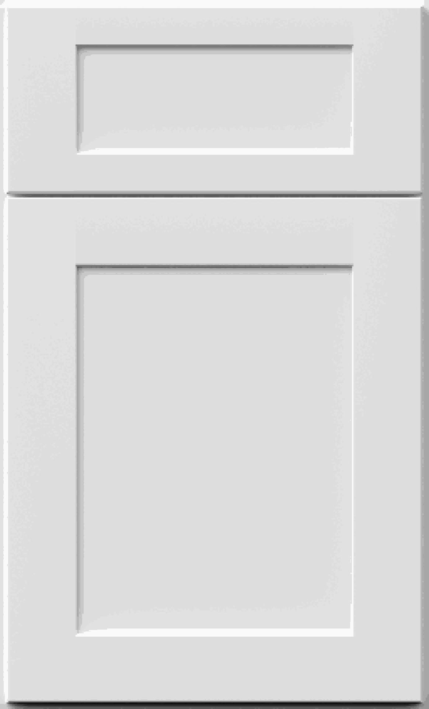
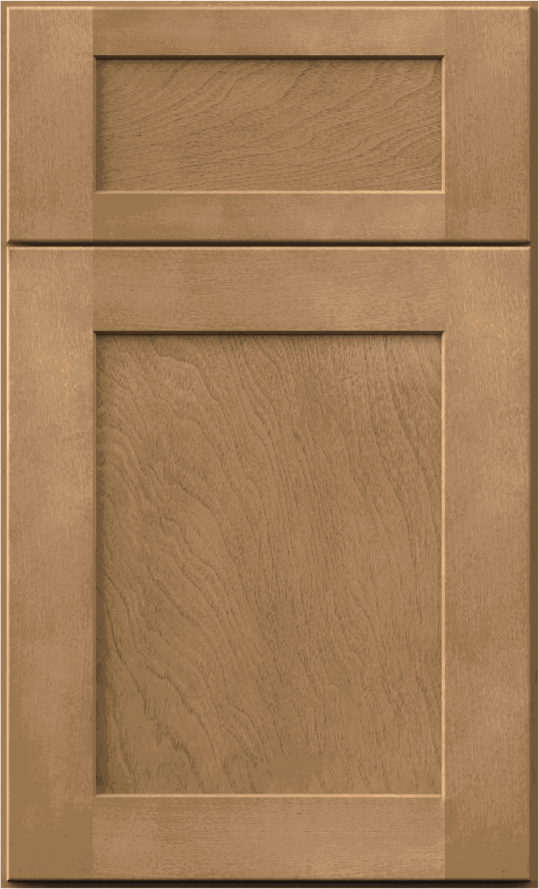
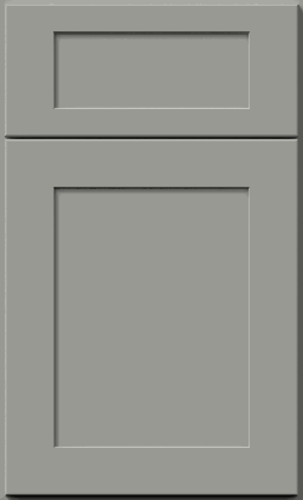
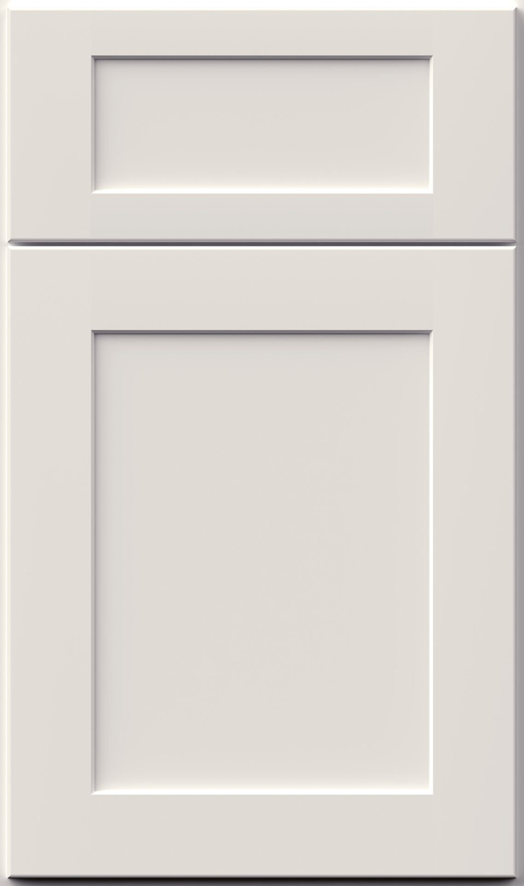

THE SIERRA COLLECTION
The Sierra Collection
WellKraft – Cabinetra – The Sierra Collection.
Our shaker-style cabinets feature a classic cabinet door profile available in a range of finishes to suit any kitchen style. Lighter color options help brighten the space and create a more open feel, while the timeless design complements both traditional and modern homes. Designed for everyday comfort, the Sierra Collection includes soft-close, fully extending drawers and doors for smooth, quiet performance.

THE SIERRA COLLECTION
Shaker Cabinets



